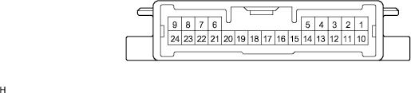
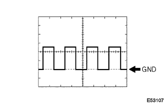
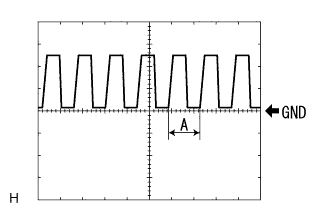

Lighting System Terminals of ECU |

| Terminal No. | Terminal Symbol | Input/Output | Tester Connection | Item | Condition | Standard |
|---|---|---|---|---|---|---|
| 1 | IG | Input | 1-9 | Voltage | IG ON | 11 to 14V |
| 3 | B2 | Input | 3-9 | Voltage | Headlight off → on | 5V or more → 1.5V or less |
| 5 | PRST | Input | 5-9 | Voltage | Always (initialization signal input terminal) | Approx. 5V |
| 6 | WNG | Output | 6-9 | Voltage | After IG ON, for 3 seconds (warning on) → after 3 seconds (warning off) | 1V or less → 11 to 14V |
| 9 | E1 | - | 9 - Body ground | Resistance | Always | Below 1 Ω |
| 10 | RHT | Output | 10-9 | Voltage | IG ON | 11 to 14V |
| 11 | LHT | Output | 11-9 | Voltage | IG ON | 11 to 14V |
| 12 | SBR | Output | 12-21 | Voltage | IG ON | 4.75 to 5.25V |
| 16 | SPDR | Input | 16-9 | Waveform | Driving at approximately 30km/h | Pulse Generation (Waveform 1) |
| 17 | RH+ | Output | 17-9 | Voltage | Headlight off → on, or headlight on, no vehicle height change → change vehicle height and hold for 3 seconds or more | 1V or less → 1.0 to 14.4V (for 17 seconds) |
| 18 | LH+ | Output | 18-9 | Voltage | Headlight off → on, or headlight on, no vehicle height change → change vehicle height and hold for 3 seconds or more | 1V or less → 1.0 to 14.4V (for 17 seconds) |
| 19 | SHRL | Input | 19-21 | Voltage | IG ON (No occupants, no luggage in luggage compartment, vehicle stationary) | Approx. 2.5V |
| 21 | SGR | - | 21-9 | Resistance | Always | Below 1 Ω |
| 23 | RH- | - | 23-9 | Resistance | Always | Below 1 Ω |
| 24 | LH- | - | 24-9 | Resistance | Always | Below 1 Ω |
 |
Waveform 1
| Item | Description |
|---|---|
| Tool Setting | 5V/DIV、20 to 25ms/DIV |

| Terminal No. | Terminal Symbol | Input/Output | Tester Connection | Item | Condition | Standard |
|---|---|---|---|---|---|---|
| 7 | BCTY | Input | A7 - Body ground | Voltage | Back door closed → open | 11 to 14V → 1V or less |
| 24 | PCTY | Input | A24 - Body ground | Voltage | Front passenger side door closed → open | 11 to 14V → 1V or less |
| Terminal No. | Terminal Symbol | Input/Output | Tester Connection | Item | Condition | Standard |
|---|---|---|---|---|---|---|
| 6 | DCTY | Input | C6 - Body ground | Voltage | Driver side door closed → open | 11 to 14V → 1V or less |
| Terminal No. | Terminal Symbol | Input/Output | Tester Connection | Item | Condition | Standard |
|---|---|---|---|---|---|---|
| 3 | TAIL | Output | E3 - Body ground | Voltage | Light control switch OFF → TAIL | 1 V or less → 11 to 14 V |
| 17 | E | - | E17 - Body ground | Resistance | Always | Below 1 Ω |
| 19 | RCTY | Input | E19 - Body ground | Voltage | Rear right door closed → open | 11 to 14V → 1V or less |
| Terminal No. | Terminal Symbol | Input/Output | Tester Connection | Item | Condition | Standard |
|---|---|---|---|---|---|---|
| 3 | IG1 | Input | F3 - Body ground | Voltage | IG ON | 11 to 14 V |
| 5 | ACC | Input | F5 - Body ground | Voltage | ACC ON( | 11 to 14 V |
| Terminal No. | Terminal Symbol | Input/Output | Tester Connection | Item | Condition | Standard |
|---|---|---|---|---|---|---|
| 4 | HU | Input | J4 - Body ground | Waveform | Light control switch in HEAD LO beam → HI beam | 11 to 14V → 1V or less |
| Terminal No. | Terminal Symbol | Input/Output | Tester Connection | Item | Condition | Standard |
|---|---|---|---|---|---|---|
| 2 | LP | Output | K2 - Body ground | Voltage | Light by illuminated entry control off → on | 11 to 14V → 1V or less |
| Terminal No. | Terminal Symbol | Input/Output | Tester Connection | Item | Condition | Standard |
|---|---|---|---|---|---|---|
| 12 | HEAD | Input | T12 - Body ground | Voltage | Light control switch OFF → HEAD | 11 to 14V → 1V or less |
| 13 | FFOG | Input | T13 - Body ground | Voltage | Front fog light switch OFF → ON | 11 to 14V → 1V or less |
| 15 | CANH | Input/Output | T15 - Body ground | Waveform | IG ON | Pulse Generation |
| 16 | CANL | Input/Output | T16 - Body ground | Waveform | IG ON | Pulse Generation |
| 17 | FFGO | Output | T17 - Body ground | Voltage | Light control switch in TAIL or HEAD, front fog light switch OFF → ON | 11 to 14V → 1V or less |
| 18 | A | Input | T18 - Body ground | Voltage | Light control switch OFF → AUTO | 11 to 14V → 1V or less |
| Terminal No. | Terminal Symbol | Input/Output | Tester Connection | Item | Condition | Standard |
|---|---|---|---|---|---|---|
| 1 | AM1 | Input | U1 - Body ground | Voltage | Always | 11 to 14 V |
| 3 | DIM | Input | U3 - Body ground | Voltage | Light control switch in HEAD LO beam → HI beam | 11 to 14V → 1V or less |
| 4 | GND2 | - | U4 - Body ground | Resistance | Always | Below 1 Ω |
| 8 | SWIL | Output | U8 - Body ground | Voltage | Light by illuminated entry control off → on | 1 V or less → 11 to 14 V |
| Light control switch OFF → TAIL | ||||||
| 11 | CANP | Input/Output | U11 - Body ground | Waveform | IG ON | Pulse Generation |
| 12 | CANN | Input/Output | U12 - Body ground | Waveform | IG ON | Pulse Generation |
| 14 | CLTE | - | U14 - Body ground | Resistance | Always | Below 1 Ω |
| 15 | CLTS | Input | U15 - Body ground | Waveform | IG ON, light control switch in AUTO, light control sensor covered with something opaque → exposed | Pulse generation (waveform 1) |
| 16 | CLTB | Output | U16 - Body ground | Voltage | IG ON | 11 to 14 V |
| Terminal No. | Terminal Symbol | Input/Output | Tester Connection | Item | Condition | Standard |
|---|---|---|---|---|---|---|
| 2 | FSPT | Output | V2 - Body ground | Voltage | Light by illuminated entry control off → on | 11 to 14V → 1V or less |
| 6 | AM2 | Input | V6 - Body ground | Voltage | Always | 11 to 14 V |
| 8 | LCTY | Input | V8 - Body ground | Voltage | Rear left door closed → open | 11 to 14V → 1V or less |
| 10 | LSWP | Input | V10 - Body ground | Voltage | Front passenger side door lock status Lock → Unlock | 11 to 14V → 1V or less |
| 20 | HRLY | Output | V20 - Body ground | Voltage | Light control switch OFF → HEAD | 11 to 14V → 1V or less |
| 21 | TAIL | Input | V21 - Body ground | Waveform | Light control switch OFF → TAIL | 11 to 14V → 1V or less |
| 22 | HF | Input | V22 - Body ground | Voltage | Headlight dimmer switch (passing) OFF → ON | 11 to 14V → 1V or less |
| 25 | LSWD | Input | V25 - Body ground | Voltage | Driver side door lock status Lock → Unlock | 11 to 14V → 1V or less |
 |
Waveform 1
| Item | Description |
|---|---|
| Tool Setting | 5V/DIV、5ms/DIV |